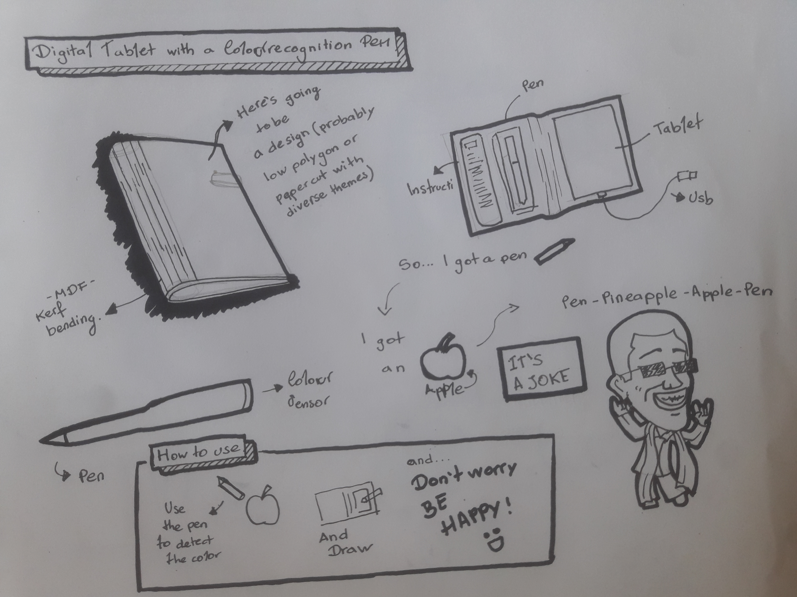

BASIC
IDEA
CONCEPT
- Digital drawing tablet with a color recognition pen 
-
Well, I want to do something related to my career so it can be useful to me, as a designer, and to my classmates or students of different careers, so basically, It’s a digital drawing tablet with a pen that can easily capture any color by a sensor and I want it to make it cheap because as a student of this type of professions there’s a lot of expenses on materials, pencils, prints, books, and so on, I believe that digital fabrication technology can allow me to achieve what I'm planning to do.
- © Silvia Lugo
- Design: HTML5 UP